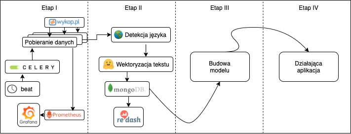

Laboratorium 9¶
Implementacja mechanizmu czyszczenia i ekstrakcji cech¶
Dzisiejszym laboratorium kontynuujemy budowanie spójnego potoku masowego przetwarzania danych. Ostatnio zaimplementowaliśmy mechanizm pobierania danych, wraz z elementami monitoringu przebiegu procesu.
Dzisiaj zajmiemy się przygotowaniem danych wejściowych do modelu predykcji popularności wpisu na podstawie jego treści, który implementować będziemy na kolejnych zajęciach.
Diagram planowanego systemu wygląda następująco:

Aktualnie będziemy implementować zakres Etapu II
Zadanie 9.0: przygotowanie środowiska (0 pkt)¶
Skopiuj potrzebny kod źródłowy z repozytorium zawierającego ostatnie zadanie (Lab 8), będziesz go używać jako bazy pod rozwiązanie poniższych zadań
Zadanie 9.1: modelowanie danych (1 pkt)¶
Zmodyfikuj zadanie pobierania danych:
a) stwórz model danych, modelujący pojedynczy wpis, zawierający co najmniej:
tekst wpisu
liczba plusów
liczba komentarzy
Model danych będziemy przekazywać pomiędzy zadaniami i uaktualniać jego zawartość
b) przekaż każdy z pobranych wpisów oddzielnie poprzez kolejkę do kolejnego zadania.
Zadanie 9.2: sprawdzanie języka (2 pkt)¶
Stwórz zadanie Celery, które będzie przyjmowało zamodelowany wpis z poprzedniego etapu.
Rozpoznaj język wpisu oraz odrzuć z przetwarzania wpisy w językach innych niż polski. Użyj dowolnej metody detekcji języka, np. langdetect lub fasttext
Zapisz statystyki detekcji języka do Grafany (w szczególności podział przetwarzanych języków)
Przekaż polskie wpisy do kolejnego etapu potoku
Zadanie 9.3: budowanie reprezentacji wektorowej tekstu (5 pkt)¶
Stwórz zadanie Celery, które będzie przyjmowało wpis z poprzedniego etapu.
Użyj dowolnej, działającej w języku polskim metody wektoryzacji, by zbudować reprezentację jego treści.
Możesz użyć:
tzw. word embeddingów - zadbaj o odpowiednią agregację wektorów. Przykładowe modele: Word2Vec, GloVe, ELMO, FastText, Flair
modeli języka (ang. language models) - pamiętaj o odpowiednią agregację wektorów, jeśli to konieczne. Przykładowe modele pretrenowane do języka polskiego - HerBERT, Roberta - lub modele wielojęzykowe np. XLM-R, Labse, LASER
Zwektoryzuj treść wpisu do formy jednego wektora, uaktualnij model danych, a następnie przekaż go do kolejnego etapu.
Zadanie 9.4: zapis danych (2 pkt)¶
Dodaj do docker compose instancję MongoDB. Upewnij się, że ustawienia persystencji danych mają odpowiednie wartości.
Stwórz task Celery, który będzie odbierał model danych z zadania wektoryzacji i zapisywał go w kolekcji Mongo.
Zadanie 9.5: wizualizacja danych (2 pkt)¶
Dodaj do docker compose instancję Redash
Podepnij bazę MongoDB jako źródło danych i przygotuj dashboard, który będzie przedstawiał chmurę słów (ang. wordcloud) dla najpopularniejszych i najmniej popularnych wpisów w ostatnim dniu - przyjmij odpowiednie progi.